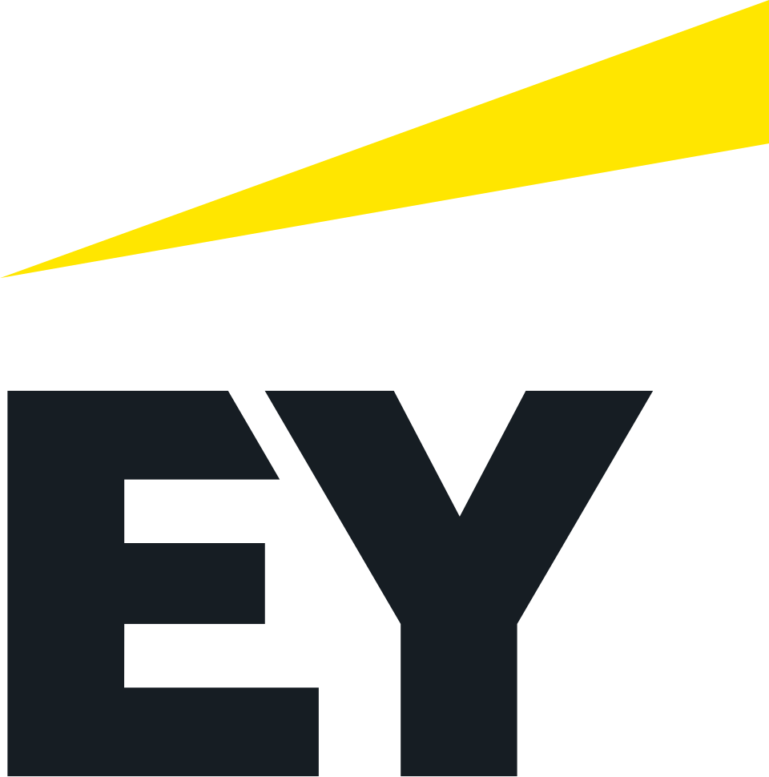
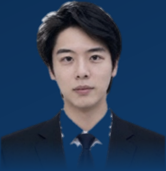

空杯心态，永远努力
本科奖学金 10w+ · 硕士录取 LSE / LBS / NUS / Duke
 京东电商
→
京东电商
→
 腾讯云与AI
抗压皮实，灵敏上进 · 多年海外与异地工作生活 · 习惯在挑战里长本事
腾讯云与AI
抗压皮实，灵敏上进 · 多年海外与异地工作生活 · 习惯在挑战里长本事

1 / 312
全校第一 · 本科两年专业排名
4 段
创业 & 头部公司实习
7.5 雅思
首考，口语 7.0 · 听阅 8.5
200万+
腾讯 · 独立拓客预估年消耗
选一个身份，我会按你的关注点重新组织下面的内容。